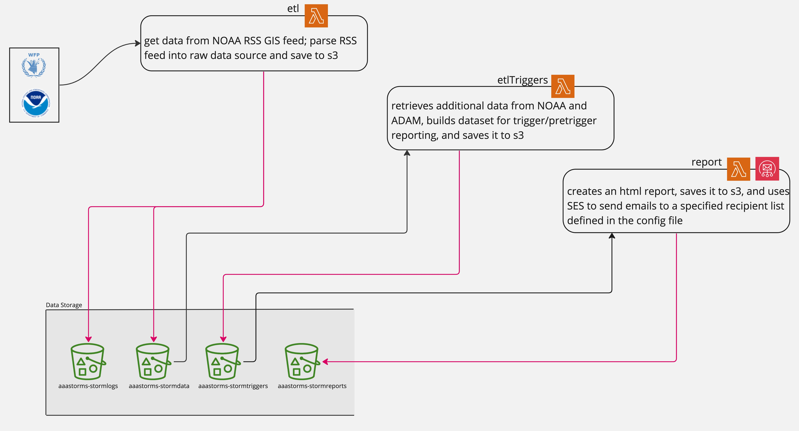
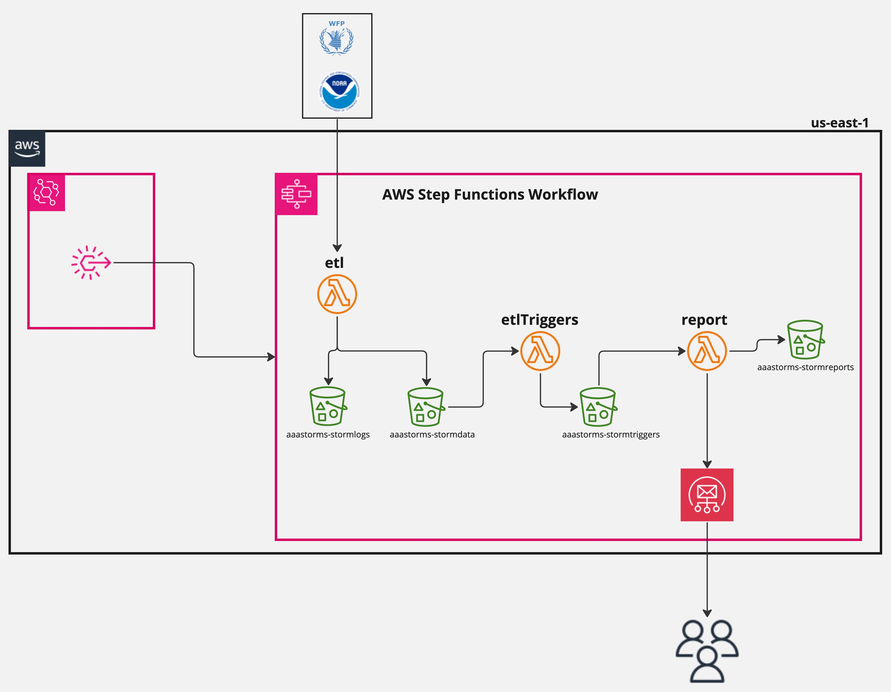

This project is a collaboration between T4D Data Science and Research and Learning (Guatemala)
Contact information:
For development related support and troubleshooting, please contact the T4DS Dev listed below. For information about the project, please contact Research and Learning.
AWS resources are tagged as:
The purpose of Anticipatory Action for the Americas – Tropical Storms (AAA Storms) is to develop a risk framework for the Americas region that supports early release of remittances for resiliency and recovery. Mercy Corps, in partnership with Remitly and the Immigration Policy Lab at Stanford, is planning to scale up the forecast-based remittance service, as piloted under the Carnegie Climate Migration project in 2022. The forecast-based remittance service is a communication service that lets remittance senders know if a tropical storm is expected to hit an area where they regularly send money. Remittance senders in the United States receive an early warning notification through their mobile application, along with a financial incentive to send remittances to their contacts in Central America. The pilot of the forecast-based remittance service was completed in Huehuetenango, Guatemala during the 2022 hurricane season. With the scale-up, we will expand the service to more communities in Central America (including Guatemala, Honduras, El Salvador, and Nicaragua) during the 2023 hurricane season. The design and operationalization of the pilot was successful and can be improved based on the experience of Tropical Storm Lisa in November 2022 and recommendations from our team and partners.
The primary data source for AAAStorms is NOAA National Hurricane Center and the WFP ADAM Live platform. The NOAA data is accessed through the NHC RSS GIS Feed.
The dataflow diagram demonstrates how data flows through the system and provides an overview of what happens at each stage of the application ETL process.
The architecture diagram shows the AWS tools and services used to link processes in the application.
The AAAStorms application run on two separate loops, a 12 hour loop to check for storms in pretrigger status and a 6 hour loop to check for storms in trigger status. These loops invoke slightly different state machines in AWS Step Functions. The 12H loop collects all storm data that is in trigger OR pretrigger status. The 6H loop collects only storm data that is in trigger status. Once a storm leaves trigger or pretrigger status, it will no longer be reported.
State Machine Definitions:
The AAAStorms application uses AWS Lambdas to run each stage of the ETL process.
Functions:
The AAAStorms application is deployed using the serverless framework.
You can learn how to use this open source CLI tool in conjunction with AWS here
The AAAStorms ETL and report is a single service. Each function is containerized using Docker and uses a function-level .yml file to support Lambda configuration.
What do I do if...
config.py file found in the report module
build_reports function in the report module
In the event that T4DS is unable to support further development of this project, we have included
a summary of skills and qualifications that you may want to consider including on a consultant solicitation.